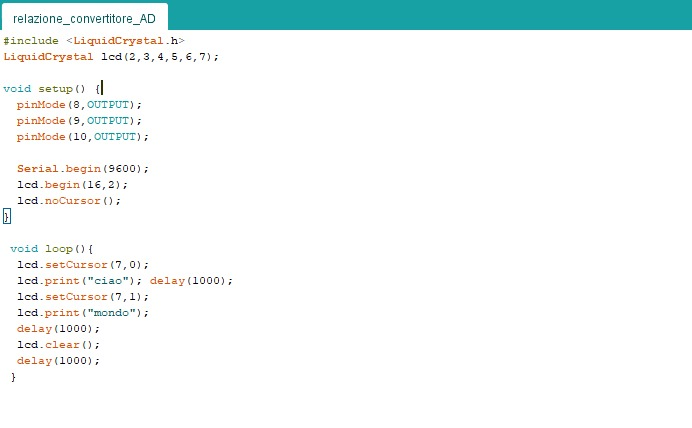

Durante questa fase dell'anno in elettronica sto studiando i vari componenti che formano il circuito di acquisizione di dati, fino ad arrivare a questo momento nel quale sto lavorando sul sistema di CONVERSIONE ANALOGICO-DIGITALE.
proprio per questo motivo In questa relazione relazione mostrerò il processo che ho svolto partendo dallo studio teorico fino ad arrivare al collaudo finale dei due circuiti sulla quale si basa questa relazione
il primo circuito che ho svolto è quello con lo scopo di visualizzare la scritta "ciao mondo" su un display 16X2
prima di iniziare la fase pratica di assemblamento del circuito ho ricevuto dal professore i principi riguardanti il funzionamento del circuito attraverso la lezione che mi ha dato
Queste sue lezioni mi hanno permesso di capire il funzionamento del circuito ed di conseguenza anche il motivo per quale è necessario eseguire la quantizzazione ed inseguito la codifica del segnale analogico
visto che il segnale in uscita dal trasduttore di temperatura è un segnale analogico che quindi nel tempo assume infiniti valori è necessario che venga convertito in un segnale digitale per permette alla scheda arduino di poterlo utilizzare
in particolare nel mio caso visto che dovevo far visualizzare la scritta "ciao mondo" sul display 16x2 ho capito che avrei visualizzato 10 caratteri compreso lo spazio che è un carattere invisibile, con questa conclusione ho ricavato che per il funzionamento di questo circuito avrei necessitato 10bit
proprio come mostra la relazione 2^n ≥N che comunica che 2 elevato ad il numero di bit utilizzati deve essere maggiore o uguale a gli elementi di cui fare la codifica
da questa relazione ho ricavato che visto che necessitavo di 10bit di conseguenza dovevo suddividere l'intervallo di tensione all' uscita dal trasduttore in 2^10 livelli ovvero 1024 che partono da 0 fino ad arrivare a 1023
Ed in fine per ogni livello ho eseguito la codifica assegnando ad ognuno di questi un valore di temperatura
inseguito ho utilizzato javascript per creare un interfaccia utente per permettere l'inserimento di valori a i quali il programma risponde attraverso una serie di calcoli in base a gli operatori utilizzati nella formula usata per il ricavo della soluzione
il fONDO SCALA rappresenta il massimo valore che può essere misurato dal circuito, nella mia relazione vale 5000mV
Δv rappresenta l'ampiezza di ogni livello, nella mia esercitazione pratica assume il vale di 4.88mV
il livello rappresenta quale suddivisione del segnalo stiamo osservando
Vi corrisponde al valore di tensione a un determinato livello
dopo ciò sono passato alla fase pratica durante la quale ho costruito il circuito posizionando i componenti necessari sulla breadboard oltre ad eseguire gli adeguati collegamenti tra il circuito e la scheda arduino
dopo la costruzione del circuito e dopo essermi accertato di aver fatto i collegamenti in modo giusto sono passato alla scrittura del programma
Per scrivere questo programma nella sezione del voidsetup ho posto come output i pin di collegamento con la scheda arduino, inseguito ho annunciato quale tipologia di display stessi usando ed inseguito nel void loop ho inserito le coordinate che le scritte dovevano occupare oltre a specificare con il comando serial.print quale scritta doveva essere visualizzata sul display
conclusa la simulazione sono riuscito a completare il circuito riuscendo a raggiungere l' obbiettivo di questa esercitazione pratica, a seguito del collaudo che mi ha permesso di verificare che il circuito riuscisse a visualizzare la scritta "ciao mondo" su il display.